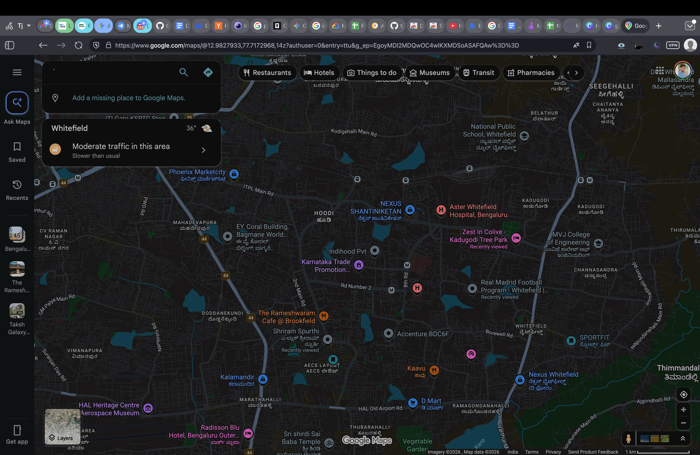

Some sites offer a dark theme. Most do not. Here is how to cover the rest, and what to do about the handful that fight it.
Chrome has an experimental flag at chrome://flags called
Auto Dark Mode for Web Contents. It works on plenty of ordinary pages, and it is
worth knowing about. But it is an unsupported flag that can change or vanish between
releases, it has no per-site control, no brightness or contrast adjustment, and it does
not touch canvas-rendered applications, which is where the sites people most want darkened
tend to live.
The reliable approach is to invert the whole page and then correct the things that must not be inverted. Inversion alone would render every photograph as a negative, so images, video, logos and icons are inverted a second time to restore their real colours.
Two details separate a good implementation from a frustrating one:
document_start avoids it.
Everything else is preference; these two are the difference between living with it and uninstalling it.
On a Mac those are ⌥+⇧+D and ⌥+⇧+B. If another extension already claimed those keys Chrome silently leaves them unassigned, so the extension shows you your real bindings rather than the defaults.
Pure black on pure white is not the goal. Brightness around 85% with contrast near 90% reads comfortably for most people; drop contrast for long reading, and use a true-black preset on an OLED panel where it also saves power.
What it cannot do. Browsers block every extension from styling their own
internal pages — anything starting with chrome:// — and the Chrome
Web Store itself. That is enforced by the browser, not a limitation any extension can work
around, so treat claims to the contrary with suspicion.
Partly. chrome://flags has an experimental "Auto Dark Mode for Web Contents" setting that darkens many pages, but Chrome documents flags as unsupported and liable to change or disappear, it offers no per-site control and no brightness adjustment, and it does not reach canvas-rendered apps like Google Sheets.
On the large majority of sites, no. A small number do break, generally archive and snapshot viewers, canvas-heavy web apps, and pages with unusual inline styling. What matters is having a fast way to exclude a single site rather than switching the whole thing off.
On an OLED screen, yes, measurably, because black pixels are genuinely off. On a normal LCD the backlight is always on, so the saving is negligible — the reason to use it there is comfort, not power.
It has to see the page to restyle it, so broad access is inherent to the category. What you should check is what it does with that access. DarkWave makes no network requests at all: fonts are bundled and site icons come from the cache your own browser already keeps, so nothing about your browsing can leave your device.
DarkWave is free and open to install. It darkens Sheets, Docs and every other site you open, skips sites that already have their own dark theme, and makes no network requests at all.